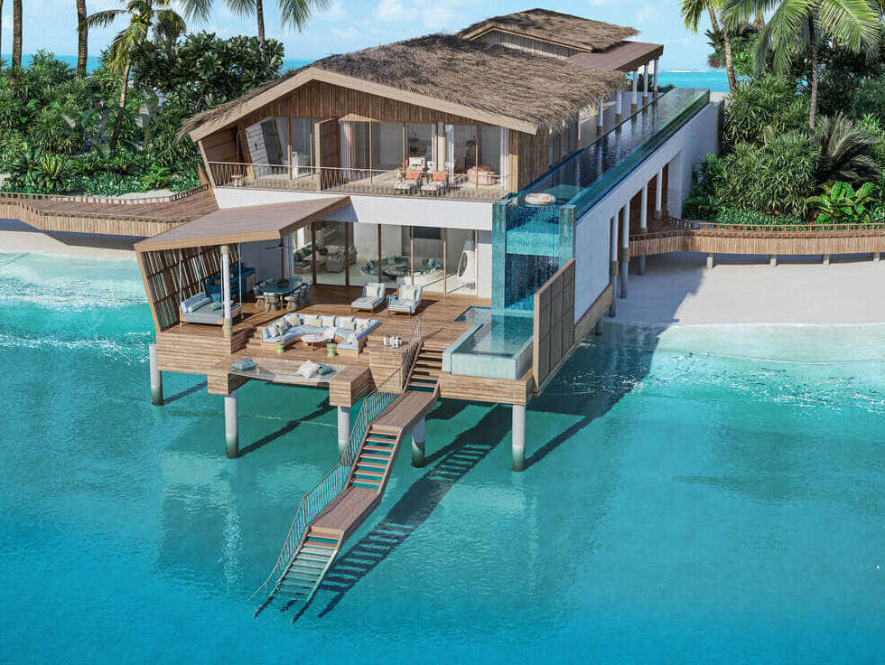
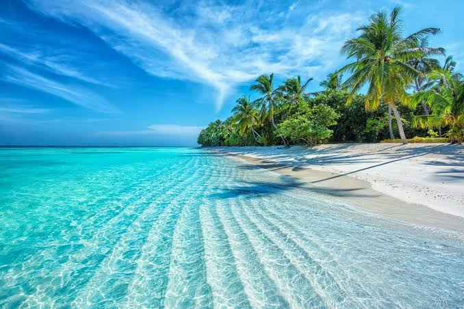

Malediven
Die Malediven, amtlich die Republik Malediven, sind ein Inselstaat im Indischen Ozean südwestlich von Sri
Lanka. Der Archipel besteht aus mehreren Atollen und 1196 Inseln, von denen 220 von Einheimischen
bewohnt und weitere 144 für touristische Zwecke genutzt werden.
Der Inselstaat hat sich in den letzten Jahren zu einem immer beliebteren Touristenziel entwickelt, was
steigenden Wohlstand für die Bewohner des Landes brachte, aber gleichzeitig ökologische und soziale
Probleme verursachte.

Wissenswertes über die Malediven
Geographie
Die Malediven sind eine Kette von 19 Inselgruppen im Indischen Ozean, südwestlich von Indien und
Sri Lanka. Sie erstrecken sich über 871 Kilometer in Nord-Süd-Richtung bis kurz südlich des
Äquators.
Die Inseln sind verteilt auf 26 Atolle mit Korallenriffen. Sie liegen, wie die Lakkadiven, auf dem
maledivischen Rücken. Dieser wird als abgekippte und gesunkene Randscholle der indischen
Landmasse angesehen. Die Malediven sind nicht, wie beispielsweise Hawaii, vulkanischen Ursprungs.
Insgesamt sind von den 1196 Inseln nur 220 Inseln bewohnt. Die Inseln liegen alle rund 1 Meter über
dem Meeresspiegel, was sie besonders anfällig für den stetig ansteigenden Meeresspiegel macht. Die
höchste Erhebung mit 2,4 Metern befindet sich auf der Insel Vilingilli im Addu-Atoll.
Die vorgelagerten Riffe bieten den einzigen Schutz vor den manchmal heftigen Monsunstürmen. Die
Inseln sind mit Palmen und Brotfruchtbäumen bewachsen und von Sandstränden und klaren Lagunen
umgeben.
Klima
Die Malediven haben im meist ruhigen Indischen Ozean ein konstant warmes, tropisches Klima mit
hoher Luftfeuchtigkeit. Die Temperaturen fallen selbst nachts selten unter 25 °C.
Prägend für das Klima sind der Südwest-Monsun von Mai bis Oktober und der Nordost-Monsun von
November bis April. Der Südwest-Monsun bringt normalerweise im Juni und Juli Wind und
intensivere Niederschläge. Als beste Reisezeit gelten die Monate Januar bis April.
Bevölkerung
Eine hohe Geburtenrate sorgte dafür, dass die Bevölkerungszahl der Malediven von ca. 74.000 im
Jahr 1950 auf über 400.000 im Jahr 2015 anstieg, was die begrenzten Ressourcen des Landes stark
belastete und großen Platzmangel auslöste. Mit dem steigenden Wohlstand der letzten Jahrzehnte
sank die Fertilitätsrate allerdings erheblich von durchschnittlich 7,5 Kindern pro Frau 1980 auf nur
noch 2,2 Kinder im Jahre 2015. Die durchschnittliche Lebenserwartung betrug 2015 76,3 Jahre
(Frauen: 77,4 Jahre, Männer: 75,4 Jahre). Die Lebenserwartung auf den Malediven hat sich laut
Zahlen der UN damit seit 1955 mehr als verdoppelt, als sie noch unter 35 Jahren lag.

Atolle
Malediven Atolle die ringförmigen Riffe sind ein Traumziel für Ferien. Grund dafür ist die
einzigartige Geografie des Landes. Die 26 Atolle umschliessen jeweils eine Lagune, an der sich die
einzelnen Inseln ringförmig wie Perlen an einer Kette aufreihen. Bevölkert ist nur ein Bruchteil der
rund 1'200 Inseln der Malediven. Etwa 220 Eilande werden von Einheimischen bewohnt, auf
weiteren 100 werden Urlaubsträume wahr. Vom Wasserflugzeug aus wird die Schönheit der
Inselwelt besonders deutlich. Türkise Lagunen inmitten des tiefblauen Meeres und dicht bewachsene
Eilande mit strahlend weissen Sandstränden. Diese herrliche Naturlandschaft, kombiniert mit der
einmaligen Unterwasserwelt machen die Atolle der Malediven zu einem wahrhaft einzigartigen
Urlaubsziel!
Die bekanntesten Atolle sind:
- Addu Atoll
- Baa Atoll
- Rasdu Atoll
- Nord Ari Atoll
- Nord Male Atoll
- Süd Male Atoll